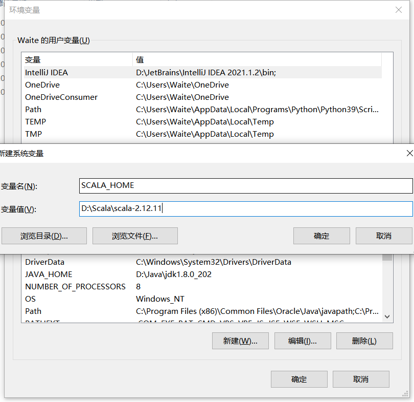
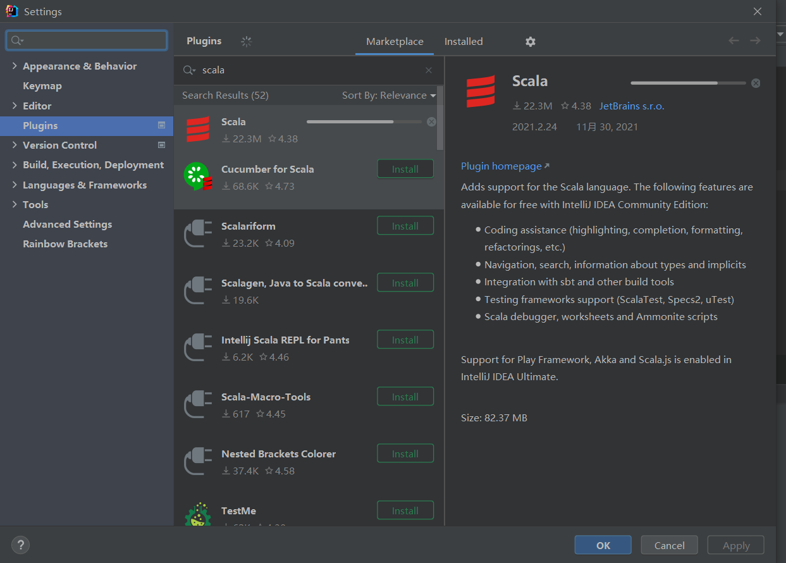
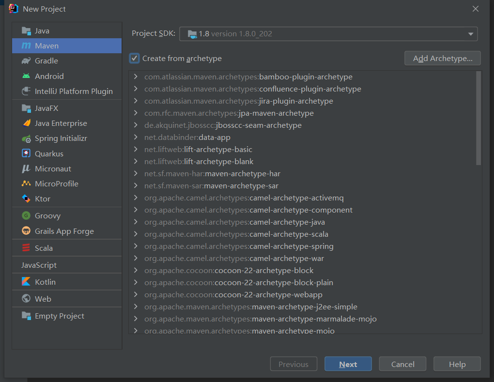
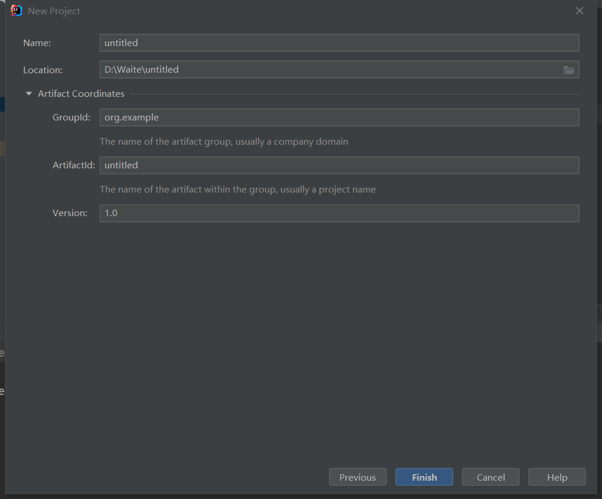
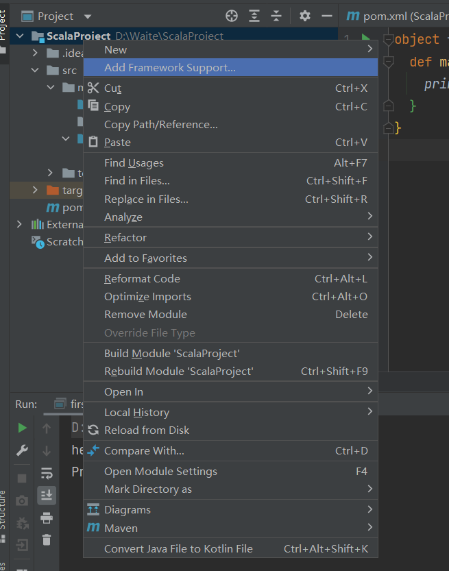
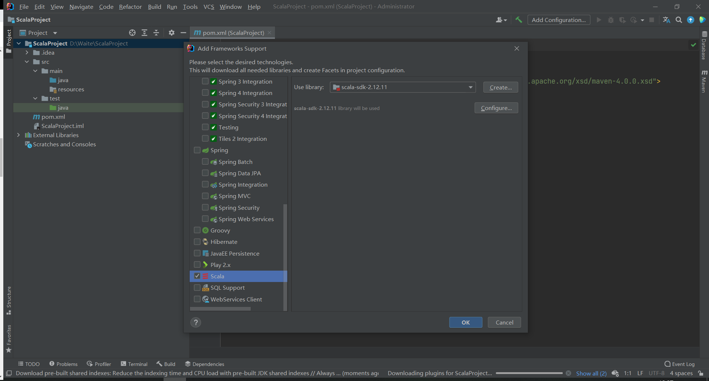
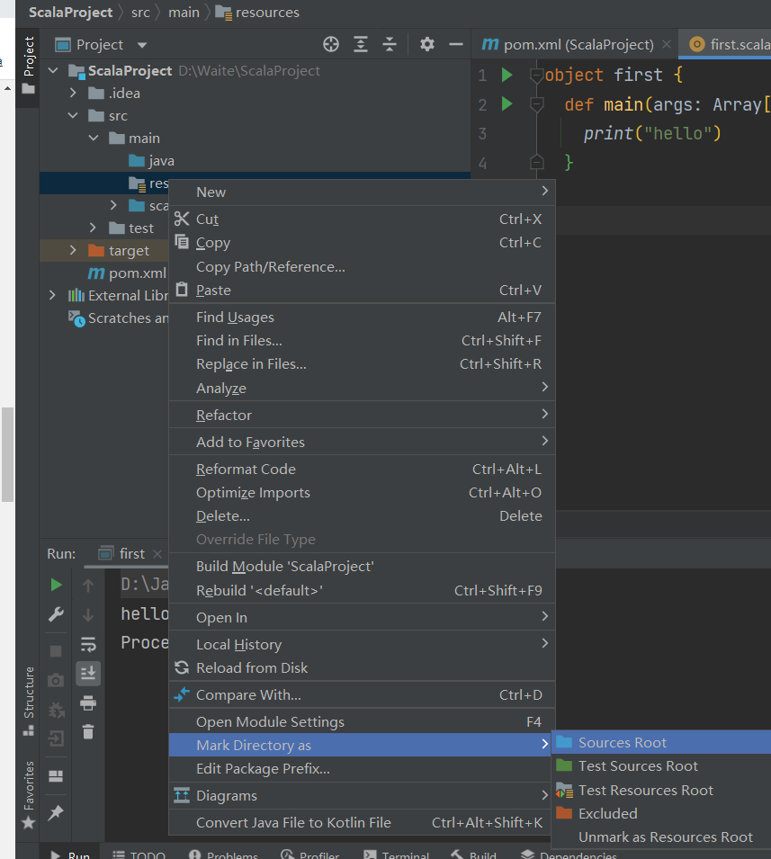

Scala 环境搭建及部署
Scala
- Scala 基于 JVM, 与 Java 完全兼容, 比 Java 更加面对对象
- Scala 是一门函数式编程语言
- Scala 对集合类型数据处理有非常好的支持
- Spark 底层为 Scala 编写
环境搭建
Win
- Jdk 1.8 安装成功
- 下载对应版本 Scala
- 解压, 配置环境变量, 在 Path 配置到 bin 目录

Idea 搭建 Scala 开发环境
Setting -> Plugins -> 下载 Scala 插件

New -> Project -> Maven -> 勾选 Create -> Next


项目右键 -> add Frameworks support -> 添加 Scala


main -> 创建directory叫做scala -> 右键scala选择mark as source root

scala -> New -> Scala -> Object
1
2
3
4
5
6
7
8
9object first {
/*
main 方法: 从外部可以直接调用执行的方法
def 方法名称(参数名称: 参数类型): 返回值类型 = {方法体}
*/
def main(args: Array[String]): Unit = {
println("hello world")
}
}
本博客所有文章除特别声明外，均采用 CC BY-NC-SA 4.0 许可协议。转载请注明来自 Waite's Blog！
评论